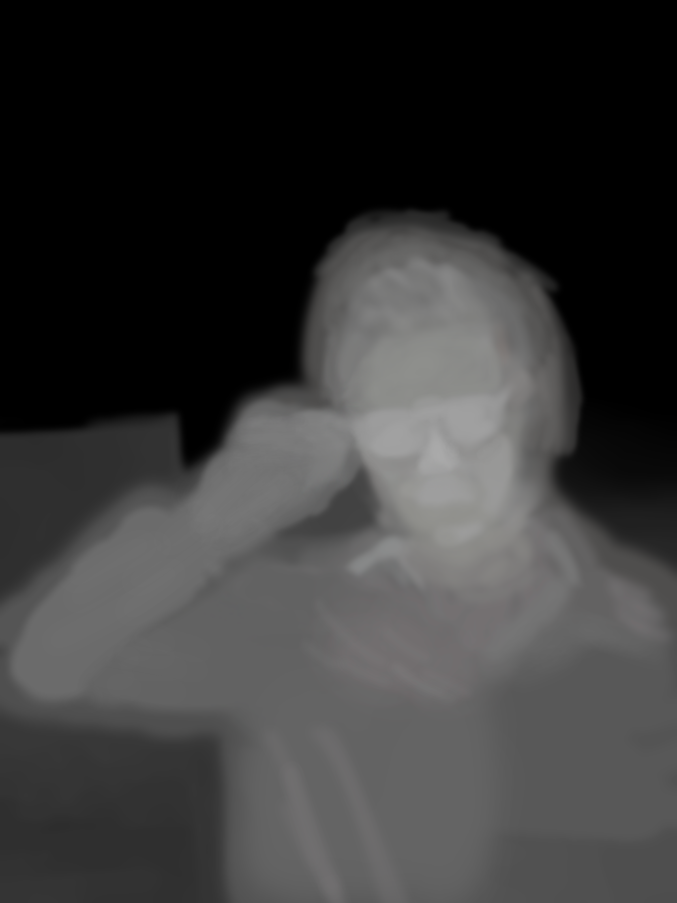

Am Anfang wollte ich mehr was mit Three.js machen und mich ein wenig mit 3d im web vertraut machen, jedoch kamen gleich viele Stolperseteine mit dem Export von Modellen und Animationen, wodurch ich mich da Anfangs nicht so in die library reinversetzen konnte. Deshalb hatte ich das Vorhaben nun außen vor gelassen und nur für einen kleinen Effekt Three.js kurz verwendet.
Ich dachte mir aber aufjedenfall das ich sowas wie eine Portfolio Seite machen wollte und da ich den Stil von meinem Experiment 4 ganz witzig fand. Dachte ich das ich was in diese Richtung mache. Aber ein experimentelles Gimmik musste her. Dabei bin ich auf ein Tutorial von dem Youtuber RedStapler (https://www.youtube.com/watch?v=FgN2EENWPFc) gekommen. Der gezeigt hat wie man mit pixi.js eine Art pseudo 3D Effekt macht indem man eine Depthmap über das Bild legt. Mir kam der Effekt bekannt vor da er momentan auch sehr beliebt in Sozialen Medien wie Facebook ist.
Meine Idee war also unterschiedliche Bilder von mir zu machen und denen eine Depthmap zu geben und pro Media Querie ein anderes Thema oder effekt zu nehmen um ein bisschen Dinge auszuprobieren, wie unterschiedliche apis and co.
Da wir auch die alten Experimente auf der Website verlinken sollen. Dachte ich das ich das auch iwie auf eine experimentelle Art und Weise mache. Ich wollte die verschiedenen Experimente wie auf einem Pinboard verteilen und man sollte sie nach belieben verschieben. Im Internet hab ich noch ein schönes JSfiddle gefunden wo ein Seil implementiert wurde. Daher kam mir die Idee die Experimente mit Seilen zu verbinden, wie in einem Ermittlungs Bord in einem Krimi.
Als erstes habe ich spontan wieder Bilder von mir gemacht, da das Handy meiner Freundin eins der neueren Iphones ist haben die Bilder sogar automatisch eine Tiefenmap enthalten, wenn sie im PortraitModus geschossen wurden. Jedoch waren diese meistens nicht so gut zu gebrauchen. Das ich das meiste selbst nachzeichnen musste.
Die helleren Stellen werden Stärker beeinflusst durch die Mausbewegung und die dunkleren weniger. Man musste also selber einschätzen was weiter vorne und hinten ist. Was leider sich meistens nicht als ganz zu einfach herausgestellt hat.
Für die Implementierung habe ich die Api Pixi.js verwendet. Dort wird das Normale Bild und die Depthmap einem Sprite hinzugefügt, wo die Depthmap als Filter festgelegt wird. Die Bewegung des Bildes mit der Depthmap wird dann mit einem MouseEvent ausgelöst.
Quelle Tutorial: https://www.youtube.com/watch?v=FgN2EENWPFc von Red Stapler
Wenn man auf der Seite auf Über mich klickt dann erscheint ein Cartoon Gesicht von mir, dessem Augen die Mouse verfolgen. Für die Augen habe ich erstmal eine SVG in Illustrator erstellt die ich als Clipping Plane genutzt habe, damit die Brille als Rahmen für die Augen verwendet wird. Damit die Augen die Maus verfolgen habe ich die Maus Position erfasst und damit die Position vom auge dann relativ zu seinem Container verändert.
Für die Effekte habe ich viele Tutorials und Doodles aus dem Internet genommen
Für den Typewriter effekt habe ich eine CSS animation wo die rechte Border vom Text den Type Block darstellt. Durch die Animation wird die Breite und die Opacity von dem Text Block verändert sodass der eindruck eines Typewriter Effektes entsteht. Um den Text zu verändern habe mehrere Texte mit dieser Animation übereinander gelegt. Und durch die Breite des Fensters habe ich den jeweiligen Text entweder an oder ausgeschaltet. Die animation wird immer wieder bei resize per javascript zurückgesetzt.
Die beiden Effekte habe ich aus frei verfügbaren Doodles aus dem Internet. Der Regen Effekt ist eine Css Animation, wo eine Regen Textur immer wieder nach unten versetzt wird. Der Matrix Effekt ist einer Javascript Animation wo zufällig eine Reihe von Zeichen sich nach unten fallen, die immer mehr an Farbe verlieren.
Quellen: CSS Rain von Dari Wala https://www.youtube.com/watch?v=DNT7G8SM8BU
Matrix Rain von Code Playground https://www.youtube.com/watch?v=fAicFIn6AXk
Für Das Portal habe ich Three.js verwendet und bin nach dem Tutorial von dem Youtuber Red Stapler gegangen. Dort werden mehrere Planes erstellt denen eine Nebel Textur zugewiesen wird. Diese verfolgen dann einer Conical Spiral Gleichug wodurch der Wirbel Effect entsteht.
Thanos Portal von Red Stapler https://www.youtube.com/watch?v=KeVW_ezeGz8
In der Hausarbeit habe ich viele verschiedene Dinge ausprobiert auch wenn sie im gesamtpaket nicht alle perfekt zusammenpassen. Im nachhinein hätte man für den 3d Effekt auch nen paar besserer Bilder verwenden sollen oder den Hintergrund mit einbeziehen können da dort klarerer entfernungsunterschiede definiert sind.
Hintergrundbilder:
https://pixabay.com/de/photos/codierung-computer-hacker-hacken-1841550/ von Pexels den 01.07.2019
https://pixabay.com/de/photos/st%C3%A4dtischen-menschen-menge-b%C3%BCrger-438393/ von Free-Photos den 01.07.2019
https://pixabay.com/de/photos/ziegel-st%C3%BChle-klassenzimmer-leer-2181920/ von Pexels den 01.07.2019
https://pixabay.com/de/illustrations/galaxie-raum-universum-astronautik-2643089/ von Pexels den 01.07.2019
NotizBordTextur:
https://hipwallpaper.com/view/VYhLGk von grasycho den 01.07.2019
Code:
Rope Phisics:
http://jsfiddle.net/ARTsinn/eWVRH/ von ARTsinn den 01.07.2019
Vector Clipping:
https://developer.mozilla.org/en-US/docs/Web/SVG/Element/clipPath von Mozilla den 01.07.2019
Rain css:
https://www.youtube.com/watch?v=DNT7G8SM8BU von Dari Wala den 01.07.2019
Matrix Rain:
https://www.youtube.com/watch?v=fAicFIn6AXk von Code Playground den 01.07.2019
Depth Map:
https://redstapler.co/3d-photo-from-image-javascript-tutorial/ von Red Stapler den 01.07.2019
Thanos Portal:
https://redstapler.co/thanos-portal-effect-javascript-tutorial/ von Red Stapler den 01.07.2019